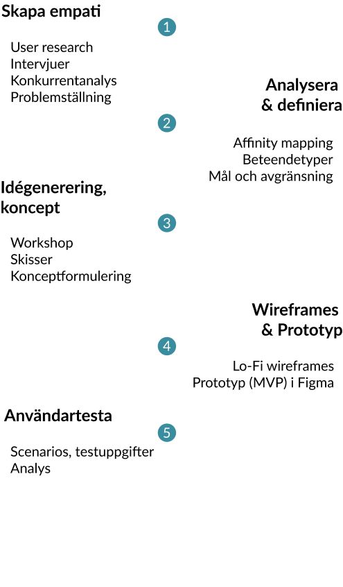

Design
Process
Design thinking i fem faser
odio voluptas dolorem officia, quas dolor doloremque pariatur totam labore voluptatem aperiam. Accusamus, animi accusantium!

UX och produktdesign av MVP för en sajt som kombinerar e-handel och information för mer hållbar konsumtion. Grupprojekt med tema hållbarhet under UX-utbildning på Chas Academy.
5 veckor
odio voluptas dolorem officia, quas dolor doloremque pariatur totam labore voluptatem aperiam. Accusamus, animi accusantium!
Att handla hållbart upplevs svårt. Tilltron till vad företag själva lovar är låg. Och konsumenter vet ofta inte var de ska leta efter tillförlitlig information inför ett köp.
Samla miljövänliga alternativ på ett ställe samt var man kan köpa dem. Beskriva kort om vad som är problematiskt i varje kategori och vilka lösningar som finns. Viktigt med tydlig och trovärdig avsändare.
Vi gjorde 8 st djupintervjuer med deltagare i varierande åldrar och med olika intresse i miljö- och hållbarhetsfrågor. Samtidigt bad vi dem titta på en konkurrerande sajt (klimatsmart.se) i ett användartest för att lära oss mer om vad vi skulle kunna jobba vidare med och förbättra i vårt projekt. Statistik om hur svenskar upplever hållbar konsumtion fann vi i en rapport från konsumentverket från 2020, Konsumenterna och miljön.
Det finns sajter och appar för mer hållbar konsumtion men främst på nischade områden som mat eller skönhetsartiklar. Klimatsmart.se verkar ha ett liknande koncept som vårt, men våra användartest visade att avsändaren kändes svår att lita på, man önskade ett smidigare sök och bättre översikt, samt mer konkreta tips och råd

odio voluptas dolorem officia, quas dolor doloremque pariatur totam labore voluptatem aperiam. Accusamus, animi accusantium!